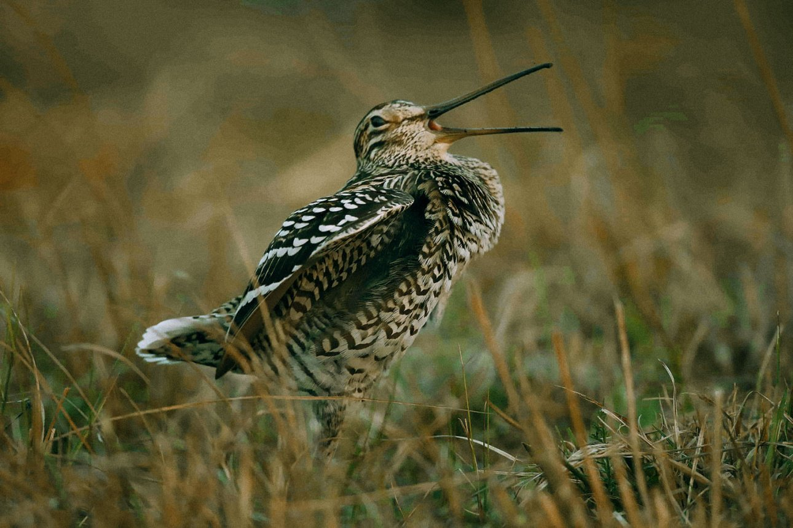

А теперь переносимся в Брестскую область. Очень малоизвестная, но классная экотропа «Надливская гряда» расположилась в ландшафтном заказнике «Выгонощанское». Тебе точно запомнится разнообразие этой экотропы, потому что на пути встретятся и разные виды деревьев, и редкие растения, и болото, и озеро. И здесь тоже есть деревянная смотровая площадка для наблюдения сверху. Если захочешь поподглядывать за птицами, то в пункте орнитологического наблюдения тебе выдадут бинокль. Кстати, заказник «Выгонощанское» называют самым совиным заказником Беларуси, потому что здесь обитает 9 видов сов.
Стоимость пешего маршрута для компании до 15 человек – 20 BYN, а водного – 15 BYN. Обрати внимание, что эту экотропу посещать бесплатно нельзя, за это можно получить штраф. Кроме прогулки по самой экотропе, здесь можно покататься на моторной лодке, катере или вообще отправиться в двухдневный экстремальный турпоход на болото с ночевкой (но для этого нужна хорошая физическая подготовка).
От тропы рукой подать до уютного Пинска. Можно заглянуть и в Ружанский дворец и Коссовский замок. Эти места находятся в радиусе 50-80 км от тропы.
Ивацевичский район, Брестская область
Расстояние от Минска: 270 км
Длина экотропы: 2 км